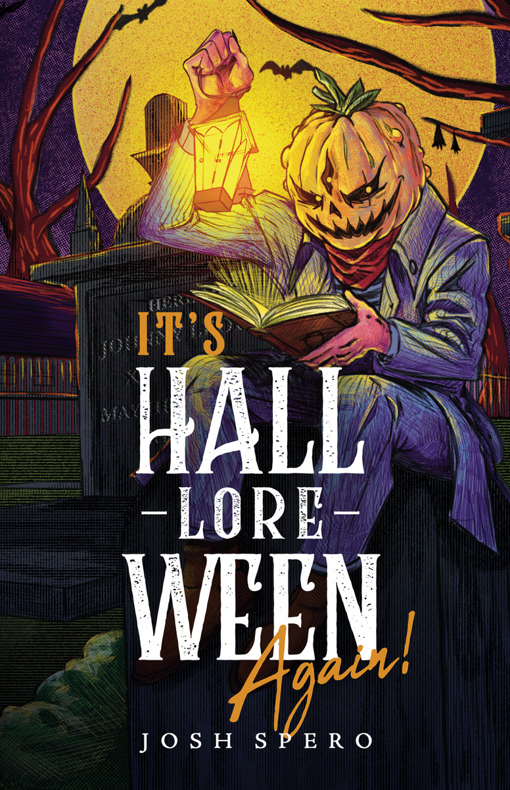

Our Catalog / It's Hall-Lore-Ween Again!

It's Hall-Lore-Ween Again!
Prepare to be haunted once more by Jacko in It's Hall-Lore-Ween Again!
A new season. A new volume. A new set of stories to share.
Jacko, the legendary Three-Eyed Jack-o-Lantern, has returned—and with him, a brand-new collection of eerie adventures, whimsical poetry, and the spirit of Halloween in full glow. Featuring three fresh short stories, six haunting poems, and spooky illustrations throughout, this follow-up to Hall-Lore-Ween delivers chills, heart, and Halloween magic for all ages.
From the imaginative world of Josh Spero comes a book the whole family can enjoy. Whether you're returning to Jacko's world or discovering it for the first time, you'll find that each tale stands on its own. No prior reading required for this sequel... though some familiar faces from the original may pop up to say hello!
Brimming with ghostly giggles, looming scares, and timeless messages of courage and connection, this is a book to return to year after year. Light a candle, cue the creepy music, and let the chill of fall settle in, because it’s Hall-Lore-Ween Again!